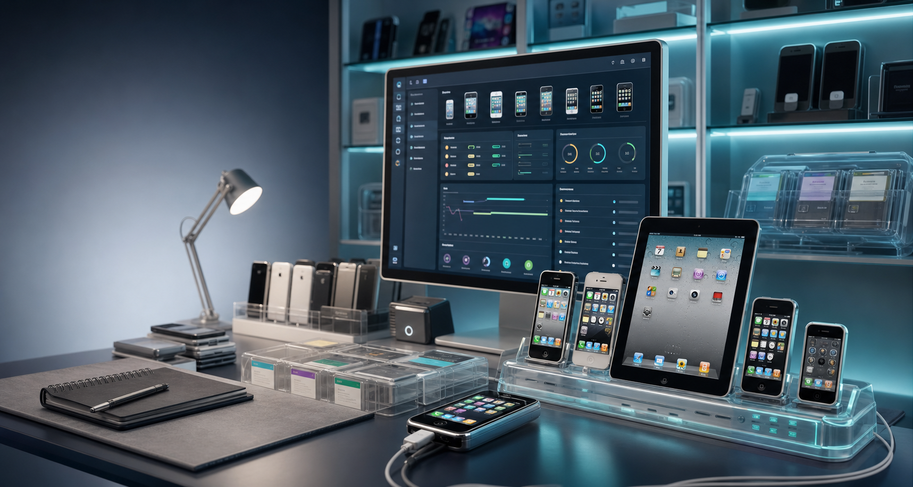

Device-aware intelligence
Firmware, model identifier, jailbreak state, storage, memory, battery, and package context shape every recommendation.
Local-first preservation for iOS 6 through iOS 9
A beautiful open-source home base for detecting, repairing, snapshotting, and documenting legacy Apple devices without locking users into a cloud account.

Not another package manager
LegacyDock combines a desktop companion, compatibility engine, repository scanner, package marketplace, snapshot engine, and archival report generator into one coherent workspace.
Firmware, model identifier, jailbreak state, storage, memory, battery, and package context shape every recommendation.
Every risky action has a preview, explicit warning, recovery plan, and snapshot path before execution.
Create reproducible manifests with package versions, repository state, preferences, hashes, and collector notes.
The local client stays useful forever. Cloud sync, backups, teams, and aggregated intelligence are optional convenience.
Working product skeleton
Connected devices
Explainable compatibility
Local repair planner
Guided handoff
Git plus Time Machine
Collector archive
Convenience, not lock-in
Architecture
Roadmap
Device profiles, local data store, marketplace metadata, snapshots, preservation reports.
Repository operations, dependency graph, install previews, health scanner, restore previews.
SHSH capture, restore eligibility, jailbreak method lookup, and external toolkit handoff with clear warnings.
Encrypted backup sync, shared collections, team inventory, repair history, hosted APIs.